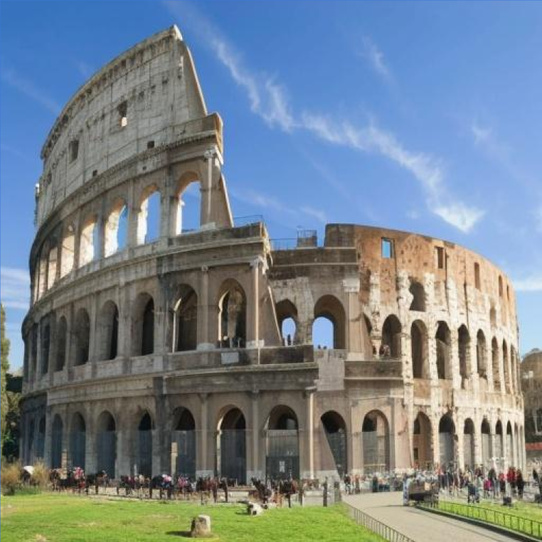

Abstract
In this work, we introduce a generalized zero-shot framework for depth-aware image editing. Our approach enables realistic scene editing, such as object insertion at specific depths and blending a scene's foreground with another's background while preserving the identity of the input scene. The key idea is to integrate Depth-Guided Layer Decomposition (DeGLaD) in the feature space of diffusion models. Specifically, we propose Feature-Guided Layer Composition (FeatGLaC), a layered guidance mechanism on the feature space of denoising UNet model which allows for image editing by progressively steering the latents toward the desired edit while maintaining the orignal scene appearance throughout the denoising process. We validate our approach on two depth-aware editing tasks: a) object insertion that preserves object and scene identity with seamless blending, and b) depth-based compositing of two real scenes with accurate lighting.
- Depth aware object Insertion: object insertion that preserves object and scene identity with seamless blending.
- Scene Composition: Depth-based compositing of two real scenes with accurate lighting.
Motivation
Depth Guided Layer Decomposition (DeGLaD) is an efficient 2.5D scene representation that allows for depth-aware editing. However, when directly applied in the pixel space, it struggles to model the accurate foreground and background scene interactions, particularly in terms of scene lighting, color harmonization, and shadow generation (as shown below). To address this, our approach leverages the rich image generation priors from pretrained image diffusion models via FeatGLaC. This enables depth-consistent, realistic scene compositions while preserving details in foreground and background regions.
Method Overview
Step 1: Depth-Guided Layer Decomposition
Scene depth serves as an effective representation to model the underlying scene geometry and enables enhanced control over 3D scene structure, Given an input image, its depth map, and a user-specified depth d, DeGLaD decomposes the image into foreground (depth < d) and background (depth > d) layers based on the scene depth. This decomposition enables precise depth-aware editing via independent editing of each layer,
\[ \mathbf{M_{\text{fg}}(i,j)} = \mathbb{I} \left( D(i,j) < d \right), \quad \mathbf{M_{\text{bg}}(i,j)} = \mathbb{I} \left( D(i,j) \geq d \right) \]
Step 2: Feature guided Layer Composition
We introduce Feature-Guided Layer Composition (FeatGLaC), a layered representation embedded in the feature space of the denoising U-Net within diffusion models. These layered feature representation enables precise control over the generated image. However, directly α compsiting the layers during generation can push the latents outside the original distribution, resulting in unnatural editing results. To address this, we propose a softer way to edit the diffusion latents with FeatGLaC which is a guidance mechanism, where the diffusion latents are progressively steered toward the desired edit at each denoising step.
Intuition: We force the foreground layer ($fg$) of $\Psi^{c}_{i,t}$ to be close to the foreground layer of $\Psi_{i,t}^a$ and the background layer ($bg$) of $\Psi^{c}_{i,t}$ to be close to the background layer of $\Psi_{i,t}^b$ as shown in above Fig. This is implemented by defining $\mathcal{G}$ :
\[ \sum_i \left\| \mathbf{M^a_{fg}} \cdot (\Psi^{a}_{i,t} - \Psi^{c}_{i,t}) \right\|^2 + \left\| \mathbf{M^b_{bg}} \cdot (\Psi^{b}_{i,t} - \Psi^{c}_{i,t}) \right\|^2 \]Results
We perform 4 depth aware editing using our method, which are all based on the layering-editing-compositing process described above.
- Depth-Aware Scene Composition
- Scene Relighting
- Depth-Aware Object Insertion
- Placing Object at different locations
Depth-Aware Scene Composition
Our method generates realistic depth-aware scene composite image with natural illumination interactions and preserving the foreground and background conents.
Hover over the background images to compose the scene with selected background image.
[Please wait for a few minutes to load all the images]
Background
Output
Background

Output
Scene Relighting
Our method can also be used for scene relighting, where we want to relight the foreground scene based on the background illumination.
Hover over the background image to relight the foreground image in the same illumination.
[Please wait for a few minutes to load all the images]
Background
Output
Background
Output
Depth-Aware Object Insertion
Given a single object image, our method can realistically insert the object at a precise depth, with natural blending with scene content, color harmonization, and appropriate shadows.
Hower over the object thumbnail image to insert it in the scene.

Placing Object at different locations
Hover over the image to move the placed object in the scene.